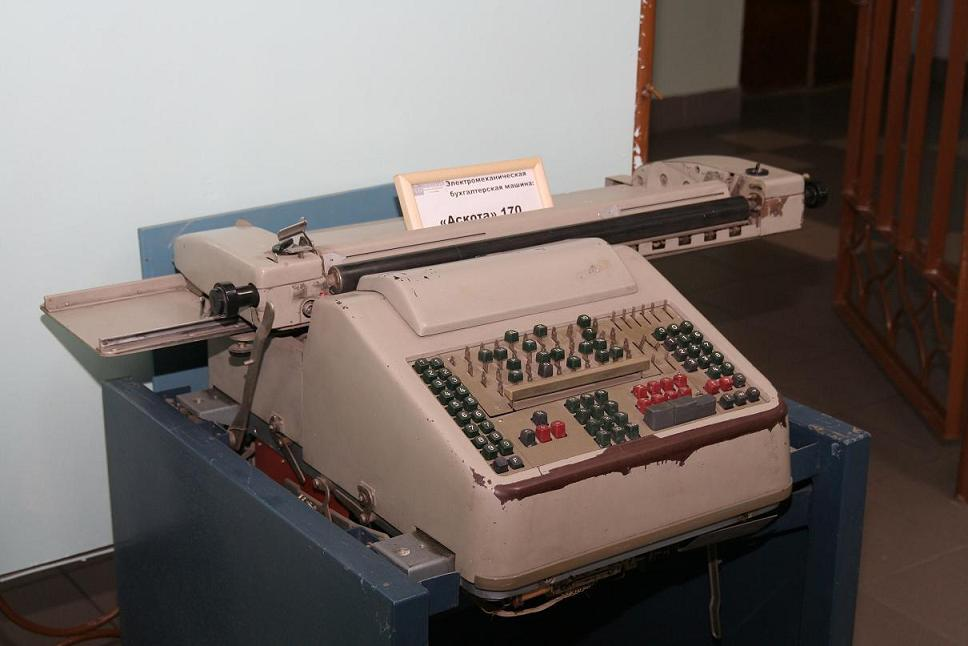

+7(48751)5-42-32
+7(48751)5-42-32 spo.tek@tularegion.ru
spo.tek@tularegion.ru
Музей вычислительной техники ГПОУ ТО "ТЭК" был создан в 1986 году, он занимает площадь 65,7 м2. В настоящее время экспозиция музея составляет 309 объектов хранения. 239 экспоната являются подлинными, 6 экспонатов – реконструкции. Книжный фонд музея составляет более 200 источников. Музей открыт с 9-00 до 16-00 час. Экскурсии для студентов и колледжа и школьников - бесплатные. Общественную группу музея составляют преподаватели и студенты колледжа.
Работа музея осуществляется на основании Положения о музее вычислительной техники и призвана воспитывать у студентов и школьников гражданственность, бережное отношение к традициям, культуре и истории своего и других народов; содействовать в организации и проведении учебно-воспитательного процесса колледжа; осуществлять программы по воспитанию, обучению, развитию и социализации обучающихся; стимулировать творческий потенциал студентов колледжа. В работе музея активно используются современные информационные технологии.
